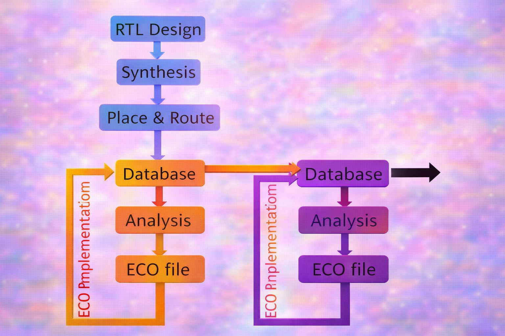
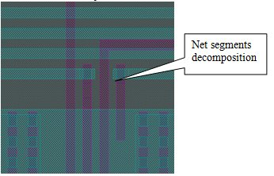
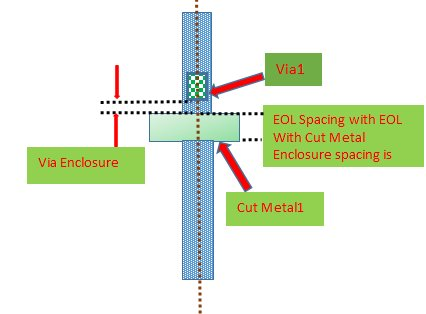
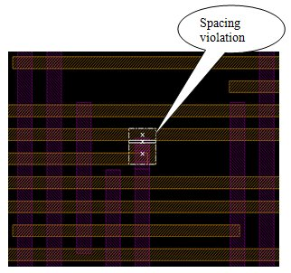
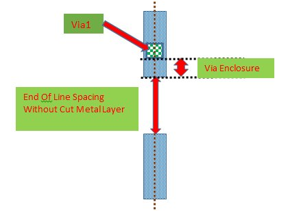
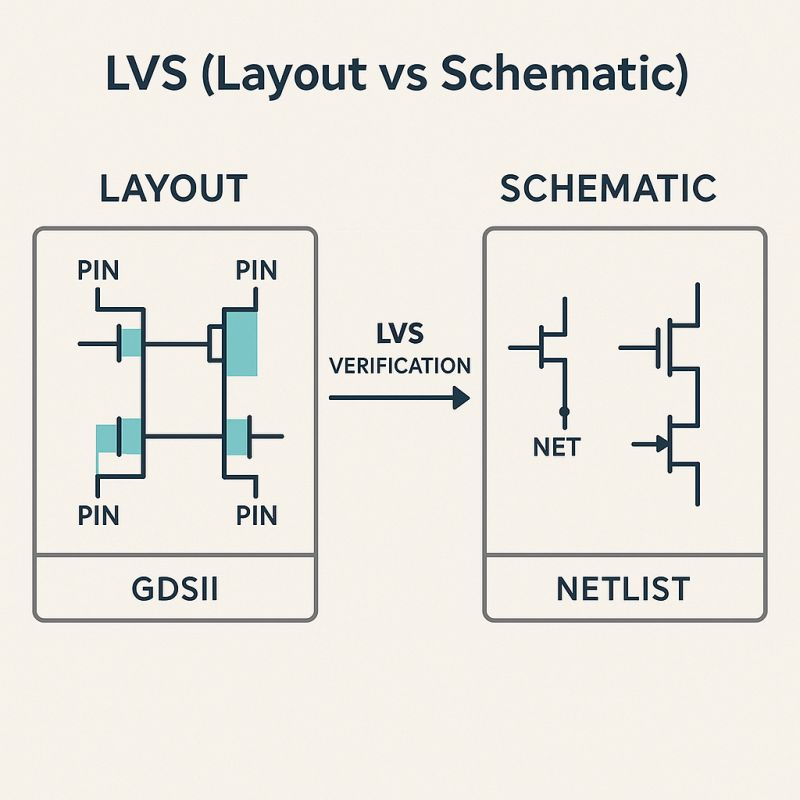
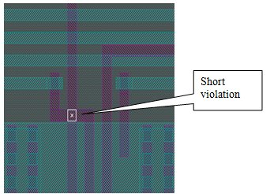
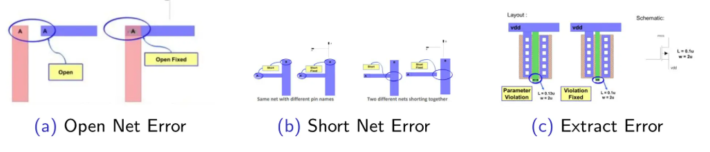
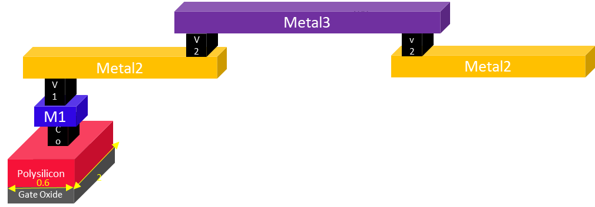
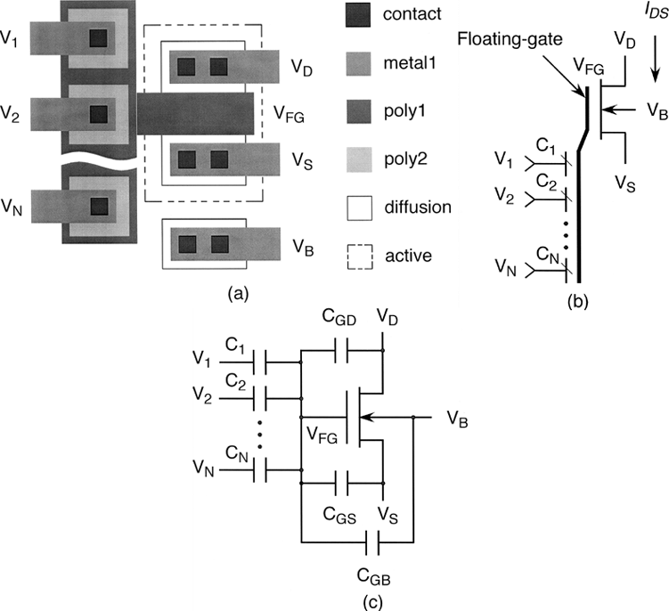

ECO (Engineering Change Order) – Complete Lecture-Style Explanation
What is ECO?
Engineering Change Order (ECO) in VLSI is the practice of introducing logic directly into the gate-level netlist and layout corresponding to a change that happens in the RTL. This is done due to design mistakes, bug fixes, or a change request from the customer.
ECO in VLSI is used to accommodate last-minute design revisions. ECO is widely used in the industry since it saves money, time, and mask cost. When we talk about ECOs in VLSI, we are referring to ECOs in the layout (Physical Design ECO).
So, on the gate-level netlist, you usually start with an ECO. Before passing it to the layout, the designer must:
- Alter the gate-level netlist
- Make identical changes in RTL
- Pass all formal and functional verification
Before you start changing your layout, make sure the ECO in VLSI physical design passes formal equivalence checking (LEC) and functional verification.
Flow of ECO in VLSI
The tapeout is the final stage of the physical design process. It provides great mental relief to the whole project team. Tapeout refers to the process of transferring a clean layout file in the form of GDSII/OASIS to the foundry for fabrication after passing all of the foundry’s tests.
However, before tapeout, there are several signoffs:
- Physical Signoff (DRC, LVS, Antenna, Density, etc.)
- Timing Signoff (STA)
- Power & IR Signoff
The ECO phase comes into role when most of these are closed but some final issues remain. Compared to a full-chip respin, ECO is preferred because it saves:
- Time
- Cost
- Mask re-generation effort
The ECO Phase in VLSI
ECO in VLSI refers to the phase of the physical design stage when engineers seal all of the signoff checks that were left open during the PnR stage.
Typically:
- Timing, DRC, and IR are mostly closable in PnR
- Final fine-tuning is done in ECO
Before entering ECO stage, engineers must have:
- Stable timing reports
- Clean DRC/LVS except a few known issues
- Confidence that all open issues can be fixed via ECO
During ECO, engineers:
- Analyze each open issue
- Generate ECO files
- Apply ECO changes in PnR tool
- Re-run signoff checks
- Iterate until closure
The ECO Cycle and its Functionality
Engineers perform analysis for each open issue using signoff tools such as:
- PrimeTime (Timing)
- Calibre/ICV (DRC/LVS)
- RedHawk/Voltus (IR Drop)
For each issue:
- They analyze the root cause
- Create an ECO file describing the fix
- Apply the ECO in PnR database
- Save the updated database
- Move to the next issue
This cycle repeats until all violations are closed.
Unconstrained ECO / All Layer ECO
An All-Layer ECO is typically done before mask generation. There is no restriction on layout changes.
You need a robust ECO flow before tapeout. ECOs can be done at:
- Post-Placement
- Post-CTS
- Post-Route
ECOs are used to:
1. Fix Timing Violations
There may be constraints that were missed on specific nets. An ECO can:
- Add buffers
- Add delays
- Resize gates
- Modify routing
to control timing behavior.
2. Fixing Bugs
Last-minute bugs are common. If a bug can be fixed via ECO, engineers prefer it rather than:
- Re-running full synthesis
- Re-running full PnR
This is especially true for large designs with long runtimes.
3. Adding Functionality
Not very common post-signoff, but small feature additions can be done using ECO rather than redoing the design.
Stages of Unconstrained ECO
1. Adding/Deleting Cells
- No restriction on adding cells except design/layout constraints
- Typical cells added:
- Buffers
- Inverters
- NAND/NOR gates
- Tie-high / Tie-low cells
- Decap cells
2. Updating the Connections
- Update net connections for:
- Existing cells
- Newly added cells
3. Placement
Tools can automatically place ECO instances, but:
👉 Best practice: Manual placement is preferred for critical paths.
4. Routing
Modern tools can:
- Automatically identify changed nets
- Re-route only modified portions
- Preserve existing routing as much as possible
Even though unconstrained ECO is usually done before tapeout, it can also be done after tapeout. There is no mask cost saving in that case, but the design cycle is shorter if changes are minimal.
Additional Important Points (You Should Include in Notes / Interviews) ✅
Types of ECO in VLSI
1. Functional ECO
- Changes logic functionality
- Usually requires RTL update + formal verification
2. Timing ECO
- No functional change
- Only timing optimization (buffers, resizing, etc.)
3. Metal-Only ECO (Constrained ECO)
- Changes only metal layers
- No new cells added
- Used after mask generation (cheaper fix)
ECO File Formats
Common ECO representations:
- ECO Netlist
- ECO DEF
- ECO TCL script
ECO Best Practices
- Always update RTL along with gate-level ECO
- Run Formal Verification after ECO
- Minimize number of added cells
- Prefer buffer insertion over major logic changes
- Keep changes local
- Avoid disturbing already closed timing paths
When is ECO NOT recommended?
ECO should not be used when:
- Many logic changes are required
- Major architectural change is needed
- More than ~5–10% of design is affected
In such cases, full re-spin is better.

Example Scripts for IC Compiler (ICC/ICC2) ECO
ECOs can be done either:
- Using database commands (directly editing the PnR database), or
- Using a modified netlist (often called an ECO netlist)
Because ECO modifies the database, always save your clean baseline design database before starting ECO, so you can roll back if needed.
1) All Metal Layer ECO using Database Commands
ECO Commands (with short comments)
# Resize an existing cell instance to a stronger drive strength
size_cell {u_i2c_slave/U3_ICC_cts} stdlib/BUFX8
# Use: Fix setup/transition/cap/fanout issues by upsizing a buffer
# Insert a buffer on the specified pin/net (creates a new buffer instance in the path)
insert_buffer {ck_rst_gen/U29/Y} {stdlib/BUFX2}
# Use: Fix timing (setup/hold), improve slew, isolate loads, reduce fanout
# Create a new cell instance in the design database (here: antenna diode cell)
create_cell {xlm48901/eco_diode_1} {ANTENNA5}
# Use: Add ECO cells such as diode, buffer, inverter, tie, spare gates
# Set the physical location (origin) of the new ECO cell instance
set_attribute [get_cells -all {xlm48901/eco_diode_1}] origin "2519.127 0.000"
# Use: Place the ECO cell at a chosen coordinate (manual ECO placement)
# Connect a net to a pin of the ECO cell (connect enable net to diode pin A)
connect_net {xlm48901/adc_l_enable} {xlm48901/eco_diode_1/A}
# Use: Update connectivity (net-to-pin connection) for ECO logic/fixes
## ICC place & route of the ECO cells
# Legalize placement after adding/moving ECO cells (align to rows, remove overlaps)
legalize_placement
# Use: Make placement legal before routing; required after any placement changes
# ECO routing: reroute only modified nets first (then others if needed)
route_zrt_eco -utilize_dangling_wires true -reroute modified_nets_first_then_others
# Use: Perform incremental ECO routing while preserving existing routing as much as possible
# -utilize_dangling_wires true helps reuse existing partial wires/stubs during ECO routing
Key Notes (added):
- This flow is often called unconstrained/all-layer ECO because placement and routing changes are allowed.
- Good practice: after routing, run incremental DRC + timing (especially HOLD).
2) Metal Mask ECO using Verilog (Freeze Silicon ECO)
A metal mask ECO is typically done when you want to limit the change impact. You can control freeze-silicon mode using set_freeze_silicon_eco.
Commands (with short comments)
# Enable freeze silicon ECO mode (restricts changes; preserves silicon/fabric intent)
set_freeze_silicon_eco
# Use: Turn ON freeze-silicon behavior for metal-mask ECO style updates
# Report current freeze-silicon ECO status/settings
set_freeze_silicon_eco -report
# Use: Confirm whether freeze mode is enabled and what restrictions are active
# Apply ECO changes using a Verilog ECO file (eco.v)
eco_netlist -by_verilog_file {./eco.v} -preserve_routing -freeze_silicon
# Use: Implement ECO described in Verilog (add/remove gates/nets logically)
# -preserve_routing keeps existing routing as much as possible
# -freeze_silicon enforces minimal disturbance / constrained ECO behavior
# ECO route to connect modified nets, prioritizing changed nets first
route_zrt_eco -utilize_dangling_wires true -reroute modified_nets_first_then_others
# Use: Incremental routing for ECO nets with minimum impact on the rest of the design
Key Notes (added):
- Freeze-silicon ECO is used to minimize physical changes and reduce risk near tapeout.
- Typical checks after this:
- report_timing (focus on HOLD)
- incremental DRC
- LVS impact check (if required by flow)
PHYSICAL VERIFICATION (Enhanced Notes)
After routing, your layout is complete. Now a number of checks are performed to verify that the drawn layout works as intended.
Physical Verification includes three major checks
- DRC (Design Rule Check)
- LVS (Layout vs Schematic)
- Antenna & ERC (Electrical Rule Check)
(Along with Formal/Equivalence Checking and Timing Analysis)
1. DRC (Design Rule Check) — Enhanced Points
DRC checks determine if the layout satisfies a set of rules required for manufacturing. These rules come from the foundry PDK (process design kit).
Additional Important Points to Add:
✅ Purpose of DRC
- Ensures manufacturability of the chip
- Prevents yield loss due to fabrication issues
- Avoids short circuits and opens in silicon
- Ensures correct lithography and etching compatibility
✅ Common DRC Checks include:
- Minimum metal width violation
- Minimum metal spacing violation
- Minimum via size and spacing
- Via enclosure rules
- Metal density rules (dummy fill requirement)
- Slotting rules for wide metal
- Layer-to-layer spacing violations
- End-of-line spacing rules
- Corner rounding issues in advanced nodes




✅ DRC Signoff Importance
- DRC must be 100% clean before tapeout
- Even one critical DRC violation can cause chip failure
- DRC is performed using tools like:
- Calibre (Siemens)
- Hercules (Synopsys)
- Assura (Cadence)
✅ GDSII as Input
- DRC tools take GDSII/OASIS as input
- They compare layout geometries against foundry rules
2. LVS (Layout vs Schematic) — Enhanced Points

LVS verifies that the physical layout matches the intended circuit connectivity.
Additional Important LVS Points:
✅ Main Objectives of LVS
- Ensures that layout matches the schematic/netlist
- Confirms that all transistors and connections are correct
- Detects unintended shorts or opens
- Ensures functional correctness at the physical level
✅ How LVS Works
- Tool extracts a layout netlist from GDS
- Compares it with schematic or post-layout netlist
- Reports mismatches if any
✅ Common LVS Errors (Expanded)
- Shorts: Two different nets wrongly connected

- Opens: Missing connections in a net
- Device mismatch:
- Different transistor sizes
- Wrong gate type (NAND vs NOR etc.)
- Pin mismatch: Missing or incorrect pin connections
- Parameter mismatch:
- Resistor value mismatch
- Capacitor value mismatch
- Incorrect transistor W/L ratio
✅ LVS & Formal Verification Difference
- Formal verification → compares pre-layout vs post-layout netlist
- LVS → compares layout vs netlist (physical correctness)
✅ LVS must be 100% clean before tapeout

3. Antenna Effect — Enhanced Explanation & Points
Antenna effect (also called Plasma Induced Gate Oxide Damage) occurs during fabrication, especially during plasma etching.

Why Antenna Effect Occurs
- Large metal wires collect charge during etching
- This charge can discharge through the thin gate oxide
- This may damage or degrade the MOS gate oxide
Additional Important Points:
✅ Effects of Antenna Violation
- Gate oxide breakdown
- Increased gate leakage
- Shift in threshold voltage (Vth)
- Reduced device reliability and lifetime
✅ Antenna Rule
- Foundry defines a maximum allowable antenna ratio
- Antenna Ratio = (Metal Area Connected to Gate) / (Gate Area)
- If exceeded → Antenna Violation
Antenna Fixes (Expanded)
- Metal Jumper Insertion
- Break long metal segments
- Route using upper metal layers
- Antenna Diode Insertion
- Connect a reverse-biased diode near the gate
- Provides a discharge path for excess charge
- Routing Strategy Change
- Avoid long metal segments connected directly to gate
- Buffer Insertion
- Break large metal areas into smaller segments
4. ERC (Electrical Rule Check) — Enhanced Points

ERC ensures that all electrical connections in the design are safe and valid.
Important ERC Checks
✅ Floating Gate Check
- If a transistor gate is unconnected → dangerous
- Can cause leakage and unpredictable behavior
✅ Power/Ground Connection Check
- Every NWELL must connect to VDD
- Every PSUB must connect to VSS
- Missing power tie → ERC violation
✅ Shorted Power Rails
- VDD shorted to VSS → catastrophic failure
✅ Unconnected Pins
- Input/output pins without proper geometry flagged
✅ Latch-up Prevention
- Ensures proper well-tap placement
- Checks for proper substrate and well connections
5. Equivalence Checking (Extra Important Point to Add)
- Compares pre-layout netlist vs post-layout netlist
- Ensures functionality is unchanged after PnR
- Tools used:
- Synopsys Formality
- Cadence Conformal
6. Timing Analysis (Extra Important Point to Add)
After LVS/DRC clean:
- Perform STA with extracted parasitics (SPEF)
- Check:
- Setup timing
- Hold timing
- Clock skew
- Transition violations
- Maximum capacitance violations
Final Summary (For Your Notes)
Check | Purpose |
DRC | Manufacturability of layout |
LVS | Functional correctness of layout |
Antenna | Prevent gate oxide damage |
ERC | Electrical safety of design |
Formal | Logical equivalence |
STA | Timing correctness |